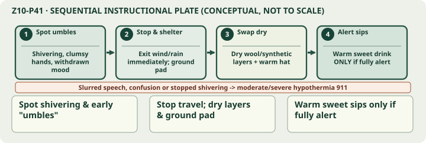

Z10-P41 · Wilderness medicine · Adapted historical material
Recognize mild hypothermia and halt heat loss before judgment fails
Catch early shivering and mild clumsiness while the patient can still cooperate with dry shelter and active rewarming.
When it applies · Cool, wet, windy, or winter conditions—remembering hypothermia occurs well above freezing when wet and chilled.
Equipment · Dry insulating layers, windproof shell, sleeping pad, sleeping bag, wind shelter, and warm sweet liquids (ONLY if fully alert).

Actions
- Watch for early mild hypothermia cues—vigorous shivering, cold hands losing fine dexterity ("umbles": grumbles, fumbles, mumbles, stumbles), and withdrawn mood—and stop travel IMMEDIATELY before confusion deepens.[E06, T03]
- Move out of wind and wet exposure into shelter, insulate underneath with a thick pad, replace wet garments with dry wool/synthetic layers and hat, and wrap in a dry sleeping bag.[E05, E10, M23]
- If the person is completely alert, oriented, and swallowing normally, offer warm (not scalding) sweet drinks and quick calories—never alcohol or tobacco—and keep monitoring until shivering stops and warmth stabilizes.[E06, M23]
Failure recognition · Pushing a shivering, fumbling hiker another two miles toward the car in cold rain instead of stopping immediately to shelter and dry them.[E06, E10]
Verify · Confirm wind/wet exposure is stopped, dry layers and ground pad are in place, and mental clarity is improving across timed checks.[E06, M20]
Stop or change course · Slurred speech, confusion, drowsiness, or shivering that stops while the person remains cold indicates moderate-to-severe hypothermia requiring immediate 911 evacuation.[T03, M23]
Evidence and editorial notes
- E05 · NWS · What To Do If You're Caught in a Winter Storm (current web edition)
- Section: Outside and find shelter · Conditions: Cold, wet or windy winter conditions
Support: Block wind, stay dry and keep off cold ground. Keep exposure reduction separate from making a fire.
Limitations: Improvised windbreaks do not provide rated thermal protection or snow-load capacity. · Conflicting evidence: None; aligns with CDC-H.
Editorial note: Separates wind, ground, and moisture heat-loss pathways. · Specialist reviewer: Cold-weather shelter specialist
Primary source · checked 2026-11-24 - E06 · CDC · Preventing Hypothermia (current web edition)
- Section: Recognizing and treating hypothermia · Conditions: Cold wet exposure; signs such as confusion, slurred speech, fumbling or drowsiness
Support: Suspected hypothermia warrants prompt help and protection from further cooling. It can occur above freezing if wet or chilled.
Limitations: Early mild shivering can mask rapidly worsening judgment impairment. · Conflicting evidence: None; aligns with ARC and WMS guidance.
Editorial note: Anchors exposure-to-medical escalation thresholds. · Specialist reviewer: Wilderness medicine
Primary source · checked 2026-11-24 - E10 · NWS · What To Do If You're Caught in a Winter Storm (current web edition)
- Section: Outside > Protect yourself from frostbite and hypothermia · Conditions: Outdoor winter storm
Support: Keep clothing dry and avoid overexertion. Wetness accelerates cooling.
Limitations: Cotton retains moisture and accelerates conductive and evaporative heat loss. · Conflicting evidence: None; reinforces moisture-management layering.
Editorial note: Links sweat management to overnight insulation integrity. · Specialist reviewer: Cold-weather shelter and wilderness medicine
Primary source · checked 2026-11-24 - M20 · NIH / MedlinePlus · First Aid Overview (current web edition)
- Section: Lay First-Aid Scope, Kit Readiness, and Documentation · Conditions: Pre-trip kit preparation and remote patient monitoring
Support: Maintain an inspected, unexpired first-aid kit matched to your actual training, keep written patient observations (time, responsiveness, breathing, symptoms, interventions) for EMS handoff, and practice skills in certified courses.
Limitations: Carrying advanced medical instruments without clinical training adds risk rather than capability. · Conflicting evidence: None; aligns with ARC and NPS-K.
Editorial note: Anchors kit sizing, SOAP-style lay observation logs, and scope-of-practice cards. · Specialist reviewer: Wilderness EMS and clinical education
Primary source · checked 2026-11-24 - M23 · CDC · Preventing Hypothermia (current web edition)
- Section: What to do; emergency response · Conditions: Suspected hypothermia or cold-related altered alertness
Support: Seek emergency help, handle gently, prevent further cooling and warm the body core within training.
Limitations: No fixed lay delay before calling or following dispatch on CPR. Separate expert protocols require temperature, pulse and training context. · Conflicting evidence: See A02 claim audit for boundaries.
Editorial note: Links Z10 clinical cold care with Z12 environmental prevention. · Specialist reviewer: Wilderness medicine and cold-injury EMS
Primary source · checked 2026-11-24 - T03 · CDC · Preventing Hypothermia (current web edition)
- Section: Warning signs; What to do · Conditions: Cold exposure and suspected hypothermia
Support: Confusion, slurred speech and drowsiness are warning signs. Obtain medical attention and protect from further cold.
Limitations: Shivering may stop as hypothermia worsens; absence of shivering is not reassurance. · Conflicting evidence: None; aligns with WMS cold guidelines.
Editorial note: Core neurological red-flag trigger for stopping activity and calling rescue. · Specialist reviewer: Wilderness medicine
Primary source · checked 2026-11-24
Source lineage · B012-P07 hypothermia signs and CDC Preventing Hypothermia; adapted historical material · Classification · Adapted historical material.